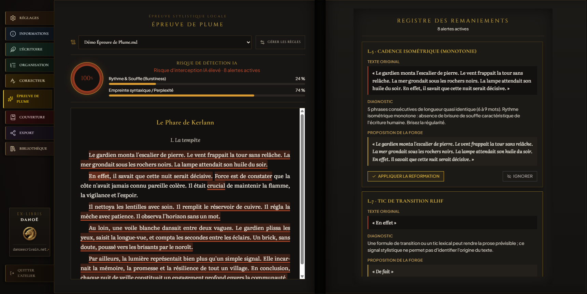
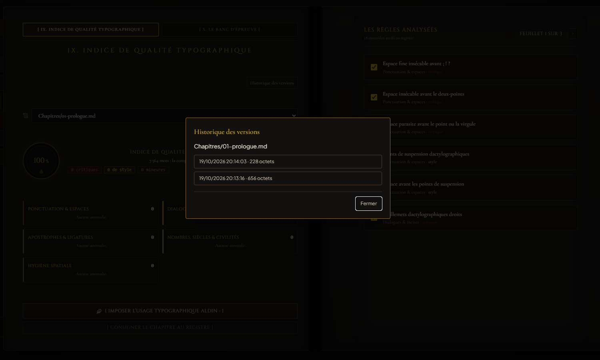
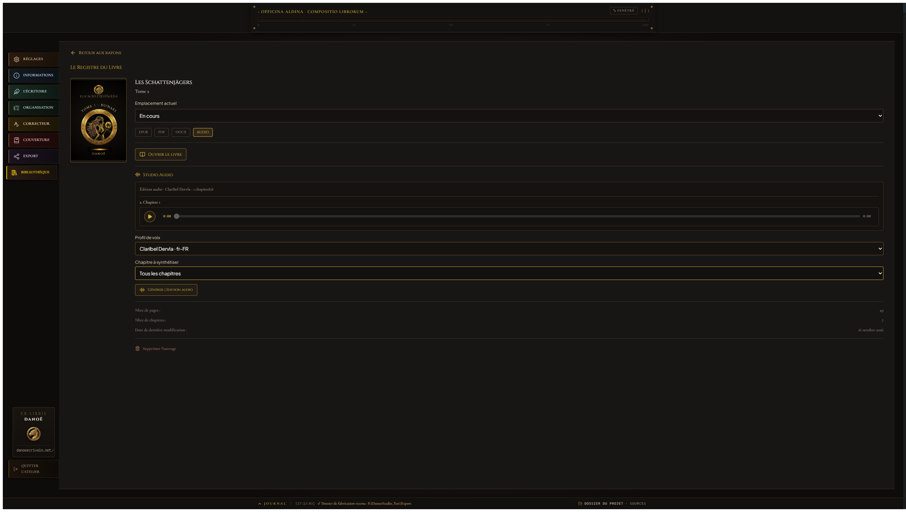

Registre des versions antérieures
Historique des nouveautés et des captures d'Aldus.
Version 1.4.10 · 20 octobre 2026
Épreuve de Plume, pupitre de remaniement
- L'Épreuve de Plume se consacre exclusivement au style : cadence isométrique, tics de transition, triades rhétoriques, entropie et distribution de Zipf.
- Chaque alerte cite le passage, explique le diagnostic et propose une reformulation de la Forge.
- Le manuscrit annoté surligne les passages signalés ; un clic ouvre la carte associée, le survol d'une carte éclaire le texte.
- Appliquer une reformation crée un instantané dans
.aldus/history, écrit le fichier de façon atomique et recalcule le score. - Texte justifié avec césures françaises en Literata, titres Markdown mis en forme, cartes en police d'interface et contrastes renforcés.
- La plaque de version vérifie les mises à jour à la demande, avec cache de deux heures.
Captures de la version


Version 1.4.9 · 20 octobre 2026
Épreuve de Plume & Usage Aldin
- Audit stylométrique local : cadence, tics de liaison, triades et régularités lexicales, avec extraits et suggestions éditoriales.
- Règles de détection et d'humanisation personnalisables ; le score reste un indice heuristique, jamais une preuve d'origine.
- Usage Aldin à l'ouvrage : aperçu puis normalisation en une passe des apostrophes, espaces typographiques, tirets et ligatures.
- Instantanés restaurables par chapitre et écritures atomiques pour protéger les manuscrits.
- Dark Atelier unifié : jetons de couleur partagés et contraste renforcé sur les pupitres.
Captures de la version

Version 1.4.8 · 19 octobre 2026
Pagination mesurée & sécurité du manuscrit
- Pagination physique mesurée par Typst à la composition PDF, conservée dans le projet et invalidée après changement des sources ou des réglages.
- Épaisseur du dos basée sur la mesure, avec estimation avant composition et parité du bloc relié explicitée.
- Historique de 15 snapshots par chapitre sous
.aldus/history, restauration confirmée et rechargement des éditeurs. - Libellés d'export clarifiés pour le PDF haute définition et l'EPUB standard, sans revendiquer de certification normative.
- Budget de 900 secondes partagé par chapitre pour la synthèse audio et l'assemblage, distinct du délai d'initialisation XTTS.
Captures de la version





